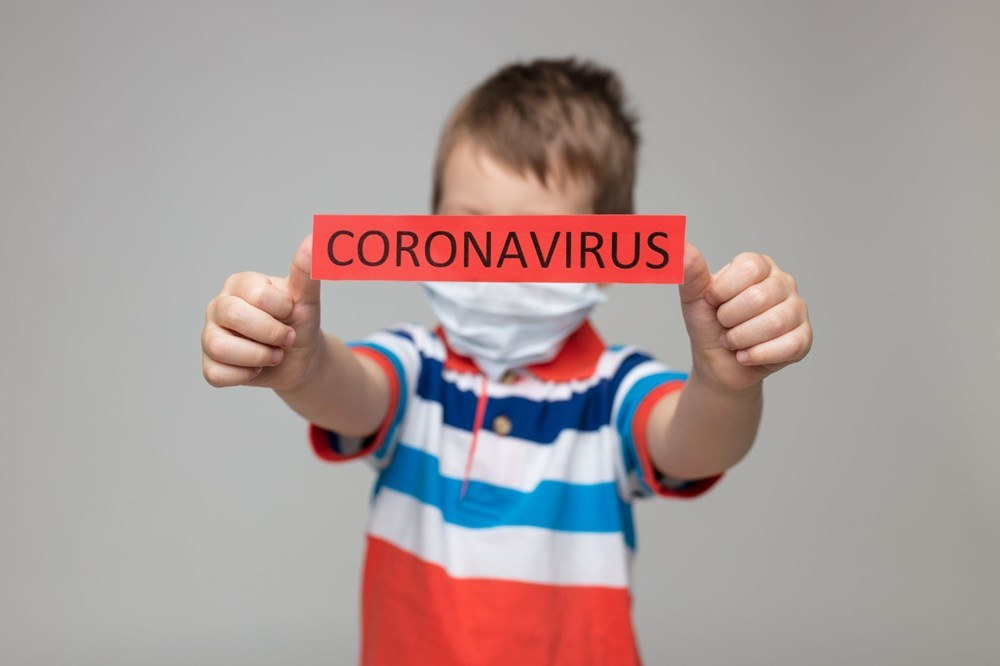
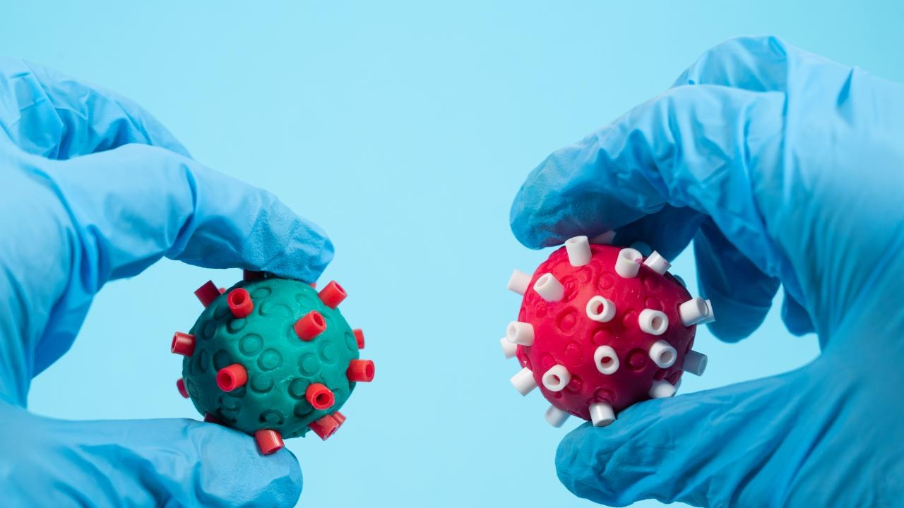

Makale Özeti: Covid 19 Aşı Etkinliği
Covid 19 aşıları ile ilgili olarak literatürde yer alan en güncel makaleleri sizin için çevirip özetledim. Mümkün olduğunca makalede yer alan cümleleri birebir almaya özen gösterdim. Sadece alıntı olarak aldığımda anlam kaybına uğrayan cümlelere anlamı netleştirmek için müdahalede bulundum. Her makalenin orijinal metni altındaki linkte mevcuttur.
Omicron varyantı ile ilgili literatürde yeterli veri bulunmamaktadır. Bilimsel veriler geldikçe onları da sizinle paylaşıyor olacağım.
COVID-19 aşılarının gerçek dünyadaki etkinliği: bir literatür taraması ve meta-analiz
Künye
Orijinal adı: Real-world effectiveness of COVID-19 vaccines: a literature review and meta-analysis
Çalışma türü: Literatür taraması ve Meta-analiz
Çalışma boyutu: toplam 38.821.141 kişi olmak üzere 14 ülkeden 50 makale ve 1 rapor
Yayın tarihi: Kasım 2021 PMID: 34800687
Özet: Sonuçlar, şu anda kullanım için onaylanan aşıların, özellikle kritik sonuçlar için COVID-19 ile ilgili ana suşlara karşı iyi bir koruyucu etkiye sahip olduğunu gösterdi.
Farklı çalışma ortamlarından elde edilen sentezlenen kanıtlar, Pfizer-BioNTech aşısının %91,2, Moderna aşısının %91,2 ve CoronaVac (Sinovac) aşısının %65,7 etkinliğini gösterdi.
Aşılama durumuna göre alt grup analizi kısmi aşılamanın tam aşılamadan daha az etkili olmasına rağmen, doğrulanmış enfeksiyon, COVID-19 ile ilgili hastaneye yatış, ağır hastalıklar ve ölüme karşı sırasıyla %66.8, %67.8, %66.4 ve %58.4 etkinliğini ortaya koydu.
Dünya çapında gerçek dünyada yapılan araştırmalar, kanıtlanmış aşıların SARS-CoV-2'ye karşı oldukça koruyucu olduğunu göstermiştir, bu nedenle maksimum aşı etkinliğine ulaşmak için standart programa göre tam olarak aşılanmamız gerekir.
Aşılamanın enfeksiyon riskini ortadan kaldıramayacağını ve özellikle yüksek risk grupları için koruyucu ve kontrol önlemlerinin ciddiye alınması gerektiğini belirtmekte fayda vardır.
Tam metin: https://www.ncbi.nlm.nih.gov/pmc/articles/PMC8595975/
Gerçek dünya çalışmalarında SARS-CoV-2 aşısının etkinliği ve güvenliği: sistematik bir inceleme ve meta-analiz
Künye
Orijinal adı: Effectiveness and safety of SARS-CoV-2 vaccine in real-world studies: a systematic review and meta-analysis
Çalışma türü: Literatür taraması ve Meta-analiz
Çalışma boyutu: aşı etkinliği için 32 çalışma ve aşı güvenliği için 26 çalışma dahil olmak üzere **58 çalışma**
Yayın tarihi: Kasım 2021
PMID: 34776011
Özet:
Tek doz SARS-CoV-2 aşılarının herhangi bir klinik COVID-19 durumunu önlemede yaklaşık %40-60 etkili olduğunu ve iki dozun %85 veya daha fazla etkili olduğunu gösterilmiştir.
Aşılar, SARS-CoV-2'nin varyantlarına karşı orijinal virüs kadar etkili olmasa da, tam aşılı kişiler için aşı etkinliği hala %50'nin üzerindedir. Normal advers olaylar yaygın, şiddetli advers olayların ve hatta ölümlerin insidansı çok düşüktür.
Ayrıca, orijinal virüse kıyasla etkinliğin azalmasına rağmen, tam olarak aşılanmanın SARS-CoV-2 varyant enfeksiyonlarını önlemede en az %50 etkili olduğu bulunmuştur. Özellikle, birleştirilmiş aşı etkisi Gama varyantı için %54 ve Delta varyantı için %74 bulunmuştur.
BNT162b2 (BioNTech, Pfizer aşısı) aşısının her varyant grubunda en yüksek aşı etkinliğine sahip olduğu bulunmuştur.
Moderna, Pfizer-BioNTech, Oxford-AstraZeneca ve Sinovac'ın üçüncü dozunun, ikinci dozdan birkaç ay sonra verildiğinde enfeksiyon engelleyici nötralize edici antikorlarda bir artışa neden olduğunu bulmuştur. Ek olarak, üçüncü dozla ilişkili yaygın yan etkiler, hafif ila orta arasında değişen ilk iki dozun semptomlarından önemli ölçüde farklı değildir.
Yan etki açısından değerlendirildiğinde, şu anda piyasada bulunan ana aşılar, kanser hastaları, organ nakli alıcıları, romatizmal ve kas-iskelet sistemi hastalıkları olan hastalar, hamile kadınlar ve yaşlılar gibi belirli popülasyonlarda sağlam bir güvenlik sağlamıştır
Gerçek dünyadaki çalışmalara dayanarak, SARS-CoV-2 aşıları güven verici bir güvenliğe sahiptir ve dünya genelinde SARS-CoV-2'den kaynaklanan ölümleri, ciddi vakaları, semptomatik vakaları ve enfeksiyonları etkili bir şekilde azaltabilir. Küresel pandemi ve SARS-CoV-2 varyantlarının sürekli ortaya çıkması bağlamında, aşılamayı hızlandırmak ve aşı kapsamını iyileştirmek hala en önemli ve acil meseledir ve aynı zamanda pandemiyi sona erdirmenin de nihai yoludur.
Tam metin: https://www.ncbi.nlm.nih.gov/pmc/articles/PMC8590867/

COVID-19 Aşılama Durumuna Göre ≥12 Yaşındaki Kişilerde COVID-19 Nedeniyle SARS-CoV-2 Enfeksiyonu, Acil Servis Ziyaretleri ve Hastaneye Yatışların İnsidansı — Oregon ve Washington, 4 Temmuz – 25 Eylül 2021
Künye
Orijinal adı: Incidence of SARS-CoV-2 Infection, Emergency Department Visits, and Hospitalizations Because of COVID-19 Among Persons Aged ≥12 Years, by COVID-19 Vaccination Status - Oregon and Washington, July 4-September 25, 2021
Çalışma türü: Klinik raporu
Çalışma boyutu: 482.464 kişi (Temmuz-Eylül 2021 dönemi)
Yayın tarihi: Kasım 2021
PMID: 34793417
Özet:
Temmuz-Eylül 2021 sürveyans döneminde, SARS-CoV-2 enfeksiyonu 137.616 aşılanmamış kişiden 4.146'sında (1.000 kişide 30.1) ve tam olarak aşılanmış 344.848 kişiden 3.009'unda (1.000 kişide 8.7) meydana geldi. İnsidans, tüm demografik katmanlarda aşılanmamış kişiler arasında aşılanmış kişilerden daha yüksekti.
Delta baskınlığı döneminde tam olarak aşılanmış kişiler arasındaki insidans, değerlendirilen tüm cinsiyet, ırk, etnik köken ve yaş gruplarında aşılanmamış kişilere göre yaklaşık üç kat daha düşüktü.
SARS-CoV-2 enfeksiyonlu tam aşılı kişilerin acil servis ziyareti veya hastaneye yatma olasılığı aşılanmamış hastaların yarısı kadardı.
Tamamen aşılanmış kişilerde COVID-19 ile ilişkili ölüm için kaba risk, aşılanmamış COVID-19 hastalarına göre yedi kat daha düşüktü.
Bu veriler, halkın Delta varyantının neden olduğu hastalık ve hastaneye yatış dahil olmak üzere ciddi COVID-19'a karşı kendisini koruması için ek ve güçlendirici dozlar dahil olmak üzere COVID-19 aşısı için CDC* tavsiyelerini desteklemektedir. CDC şu anda hastalıkları önlemek ve SARS-CoV-2 bulaşmasını azaltmak için ≥5 yaşındaki tüm kişilerin COVID-19'a karşı tam olarak aşılanmasını önermektedir
*CDC: Centers for Disease Control and Prevention (Hastalık Kontrol ve Korunma Merkezleri -ABD-)
Tam metin: https://www.cdc.gov/mmwr/volumes/70/wr/mm7046a4.htm?s_cid=mm7046a4_w

Birleşik Krallık'ta yetişkinlerde (ComFluCOV) COVID-19 aşılarının (ChAdOx1 veya BNT162b2) mevsimsel grip aşıları ile birlikte uygulanmasının güvenliği ve immünojenisitesi: çok merkezli, randomize, kontrollü, faz 4 denemesi
Künye
Orijinal adı: Safety and immunogenicity of concomitant administration of COVID-19 vaccines (ChAdOx1 or BNT162b2) with seasonal influenza vaccines in adults in the UK (ComFluCOV): a multicentre, randomised, controlled, phase 4 trial
Çalışma türü: Çok merkezli, randomize, kontrollü, maskelemeli bir faz 4 denemesi
Çalışma boyutu: 756 kişi
Yayın tarihi: Ekim 2021
PMID: 34774197
Özet
Bulgular Oxford–AstraZeneca (ChAdOx1) veya Pfizer–BioNTech (BNT162b2) ile grip aşısı kombinasyonunun birlikte uygulanmasının hiçbir güvenlik endişesi yaratmadığını, kabul edilebilir reaktojenite* profilleri ürettiğini ve bağlayıcı antikor tepkilerini koruduğunu gösteriyor.
Uygulama sonrası çoğu ek reaksiyon (ağırlıklı olarak yorgunluk, baş ağrısı ve miyalji) hafif veya orta dereceli olarak kaydedildi.
Eşzamanlı uygulama, grip aşısı ile uygulanma ikinci doz COVID-19 aşısı ile yapılmıştır.
Kaynak: https://www.ncbi.nlm.nih.gov/pmc/articles/PMC8585490/
*Klinik deneylerde, reaktojenisite terimi, bir aşının yaygın, "beklenen" advers reaksiyonlar, özellikle aşırı immünolojik tepkiler ve enjeksiyon bölgesinde ateş ve kol ağrısı dahil ilişkili belirti ve semptomlar üretebilme özelliğini ifade eder.
Editörün yorumu
İlk iki makale son yapılan çalışmaların aşıların güvenli ve etkin olduğunu göstermesi açısından önemlidir. Özellikle ikinci çalışmada yaygın mutasyonlar üzerinde aşı etkinliği azalmış olsa bile hala oldukça koruyucu olduğu gösterilmiştir.
Üçüncü makale bir güvenlik ve etkinlik çalışmasına 12 yaşa kadar olan bireyleri de dahil etmesi açısından oldukça önemlidir.
Her üç çalışma da (özellikle ilk ikisi) oldukça geniş kitlelerle yapılmıştır. Covid 19 aşılarının etkin ve güvenli olduğunu göstermektedir.
Son çalışmada ise Covid 19 aşısı ile eş zamanlı yapılan grip aşısının aşı etkinliğini azaltmadığı, aşı güvenliğini bozmadığı ancak aşıya bağlı beklenen hafif yan etkilerde (ateş, kolda ağrı vs) az miktarda artış olduğu gösterilmiştir. Yapılan çalışma görece küçük bir nüfusu kapsadığı için bu konuda net bir yorum yapmadan önce başka çalışmaların yapılmasını beklemek uygundur.
Sonuç olarak bize düşen kendimizin ve toplumun sağlığı için bir an önce aşı olmak, çalışmalar takviye doz önerdikçe bunları da yaptırmak, bir yandan da maske-mesafe-temizlik kurallarına uymaya devam etmektir.